Records analyzed
3.20M
Integrated outage records across NYC from 2014 through 2023.
A citywide read of how outage burden, severe weather, and climate vulnerability align across NYC from 2014 to 2023, built from the notebook results and reframed for industry-facing decision-making.
Trend View
The time-series pattern is not a simple straight line. 2018 is the scale shock, 2020 is the duration shock, and 2023 cools from the 2022 spike but still ends well above the earliest years in the panel.
Bars show total annual outage records. The line shows the share tagged as severe weather. The 2018 surge stands out as both a volume event and a storm-driven year.
P90 duration and the share of outages above 8 hours peak in 2020, indicating that the hardest year operationally is not the same as the biggest year by count.
Every year in the panel shows at least one statistically notable month. The signal migrates between spring, summer, and fall, which argues for seasonal preparedness instead of one single “storm season” assumption.
Model Summary
Across tract- and county-level models, outage occurrence responds much more clearly to weather and vulnerability than outage duration does. Social-economic vulnerability is the most consistent CVI signal for counts.
Incident rate ratios show the relative lift associated with each standardized predictor in the county count model. Values above 1.0 indicate higher expected outage occurrence.
Best tract occurrence model with nonlinear CVI and weather interaction.
Extended county occurrence model using year, severe weather, and CVI structure.
show significant severe-weather linkage to tract-level duration at 5%.
Borough View
The borough profile shows two different risk stories. The Bronx concentrates social vulnerability, while Staten Island carries the highest climate-extreme mean. Queens stands out operationally on raw occurrence volume.
The Bronx separates from the rest of the city on both average vulnerability and concentration of high-vulnerability tracts.
Highest mean overall CVI at 0.551, highest social-economic CVI mean at 0.761, and 74.3% of tracts in the high-CVI group.
Recorded the single highest county-year outage occurrence in the panel: 305 in 2022, despite a low high-CVI tract share.
Highest climate extreme-events CVI mean at 0.537 and the longest county-year mean duration: 16.2 hours in 2020.
Less concentrated on high-CVI share than the Bronx, but still material for resilience planning because outage frequency remains elevated.
Notebook Figures
These panels come directly from the report notebook and show the deeper analytical chain behind the headline summary: significance patterns, seasonality clustering, CVI model behavior, and duration-focused outcomes.
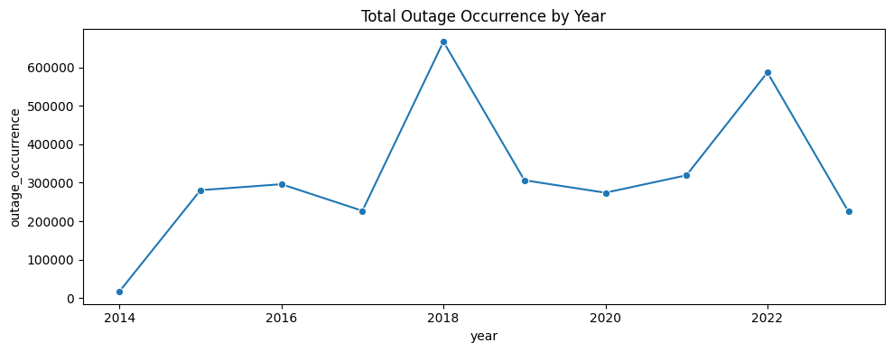
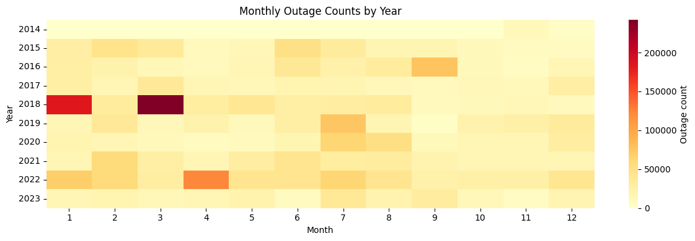
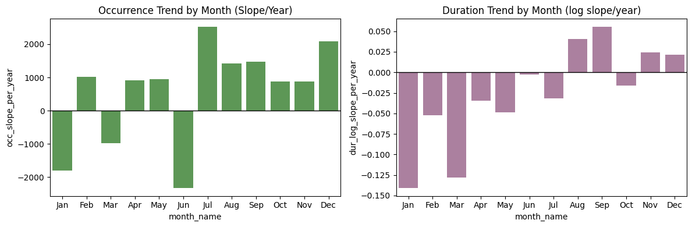
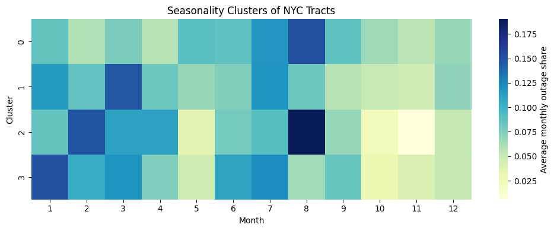
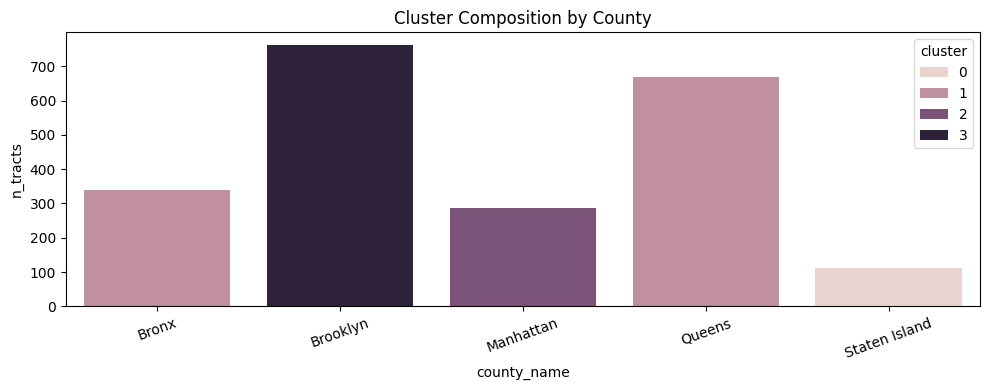
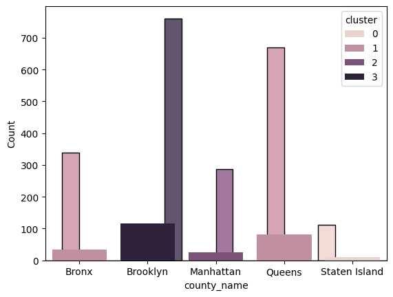
CVI Deep Dive
Parts 7 through 9 of the notebook are where the CVI story becomes clearer. The tract-level extension is exploratory, while the county-year correction produces the more defensible final interpretation.
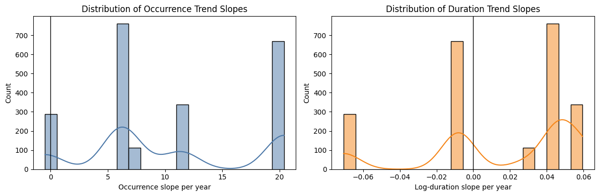
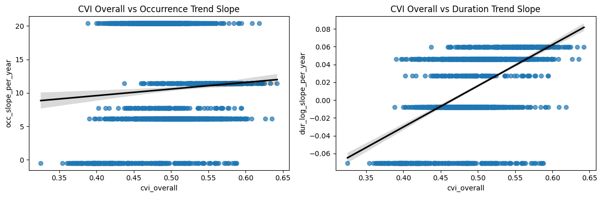
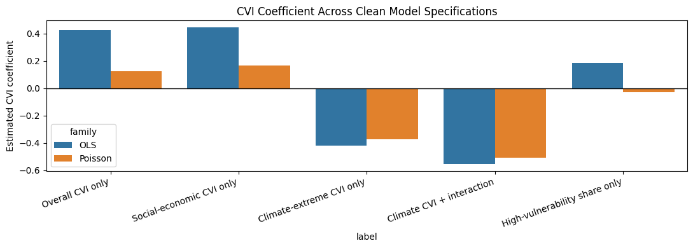
The safest headline from the notebook is not “all CVI dimensions matter equally.” It is more specific: outage counts rise with time and severe weather, and among vulnerability measures the most defensible relationship is with social-economic vulnerability. Climate-extreme CVI behaves less intuitively and should be presented carefully rather than as a lead finding.
Duration Study
The duration-focused notebook section moves from county-year mean duration to event-level deduplicated outage records. That makes the duration story more interpretable and also shows why it is weaker than the count story.
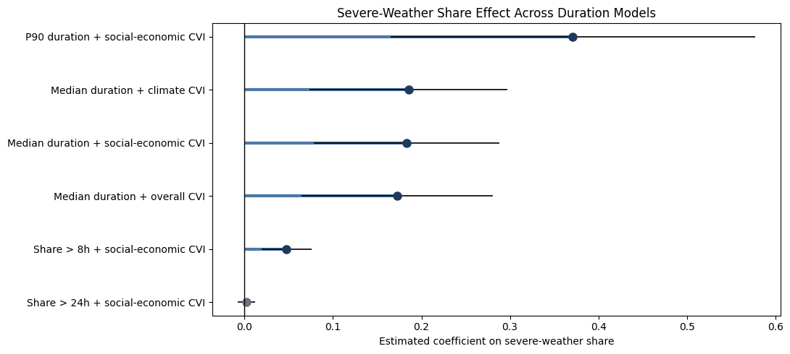
The refined duration panel is based on 4,518 unique outage events and 47 county-year observations. Typical outages remain short, but the upper tail stretches substantially in stress years, especially 2020. The most stable duration predictor is severe-weather share, not vulnerability. That is why this site leads with outage burden for equity targeting and keeps duration as an operations-focused companion result.
Usually around 1 to 2 hours across county-years.
Captures the operational tail much better than mean duration.
8-hour and 24-hour shares reveal stress years more clearly than averages alone.
Spatial Story
These map frames translate the notebook into a visual atlas. Click any frame to enlarge it, or open the interactive map for borough-by-borough detail.
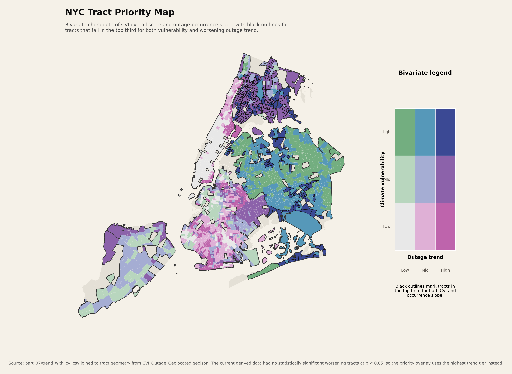
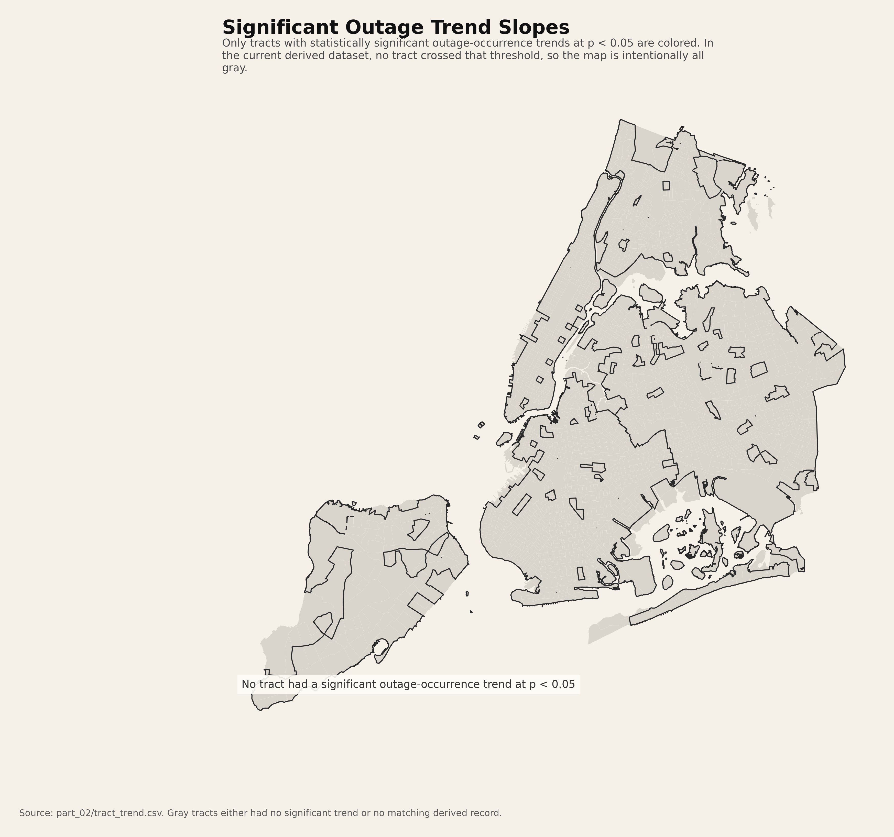
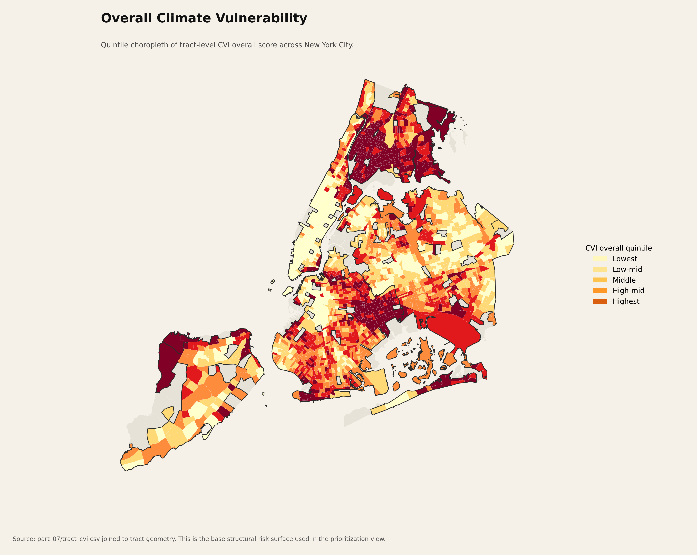
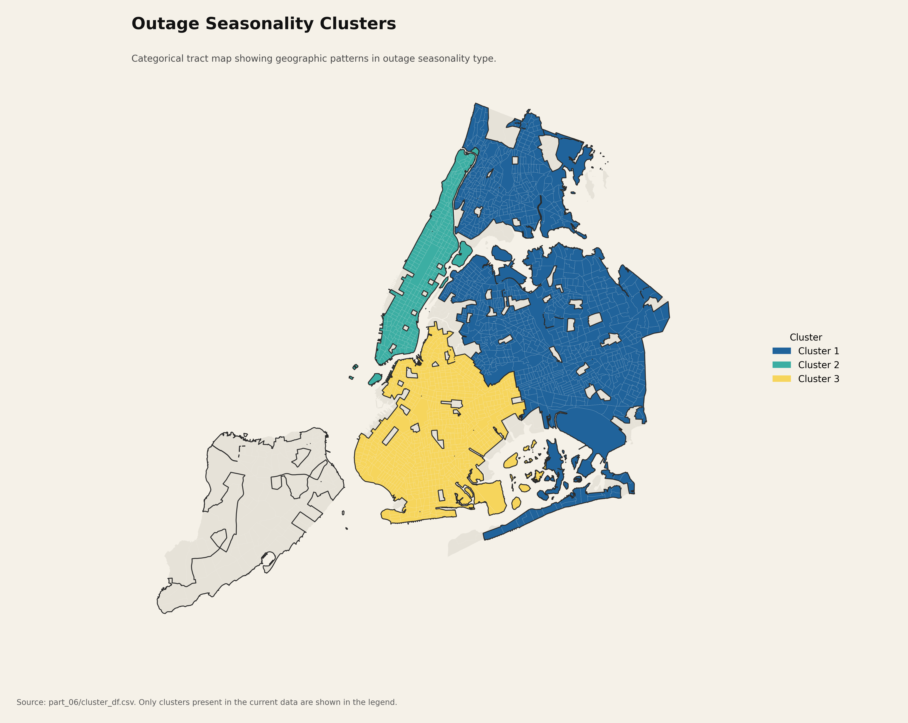
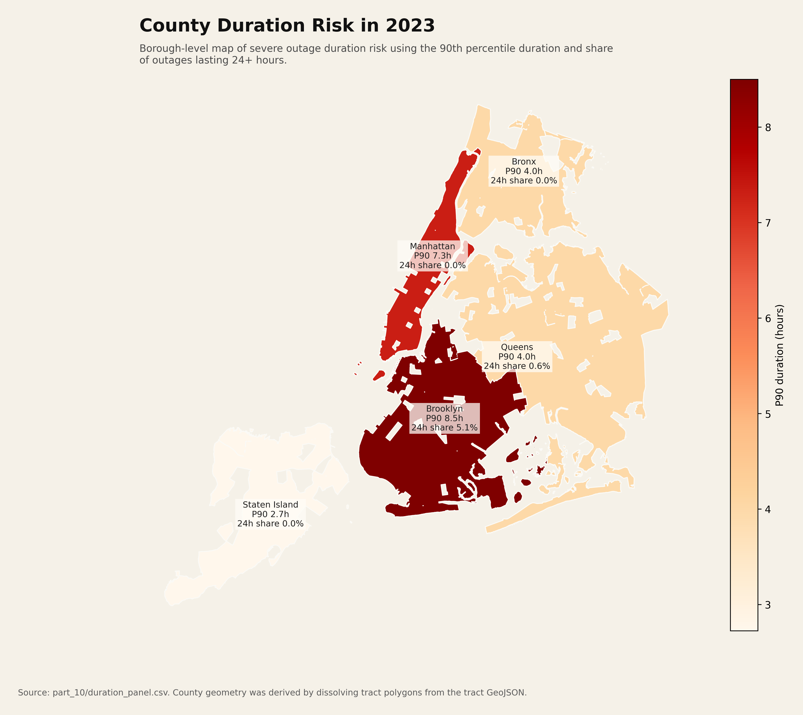
Industry Readout
The data supports a more targeted resilience story: combine vulnerability concentration, storm sensitivity, and duration burden rather than relying on any one map alone.
The priority overlay is the strongest investment-facing graphic because it collapses frequency and vulnerability into one decision surface.
The duration models point much more to severe weather and customer scale than to tract CVI, so staffing and restoration readiness matter.
The Bronx, Queens, and Staten Island tell different stories. Vulnerability concentration, raw occurrence, and duration stress are not aligned in one place.
Every year shows a statistically notable month, but those months shift. Preparedness should follow observed local rhythm, not a fixed calendar assumption.